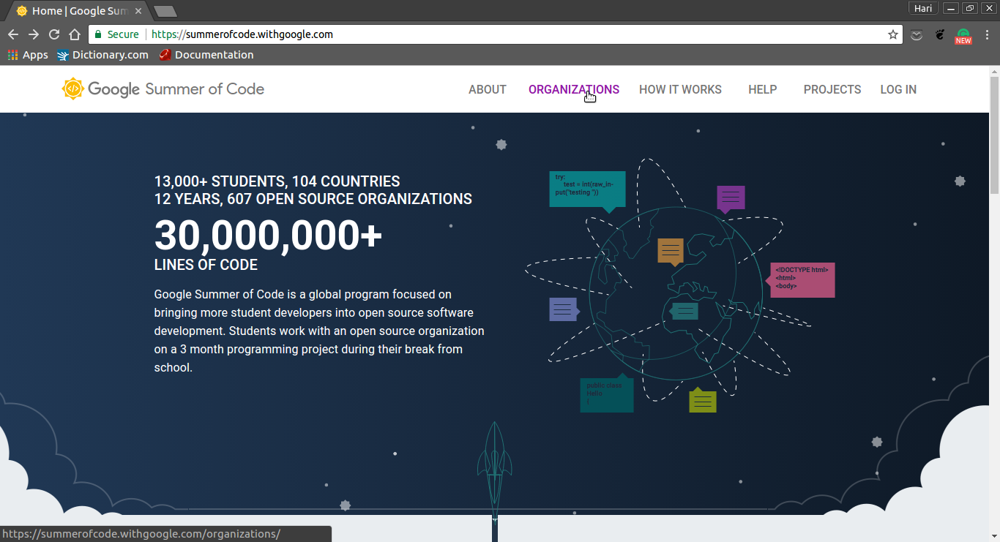
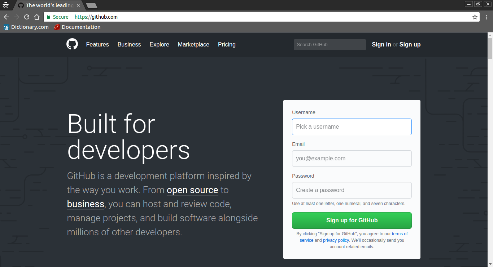
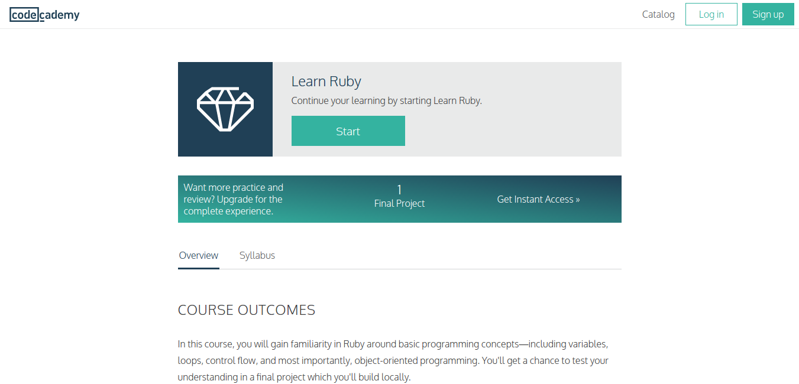
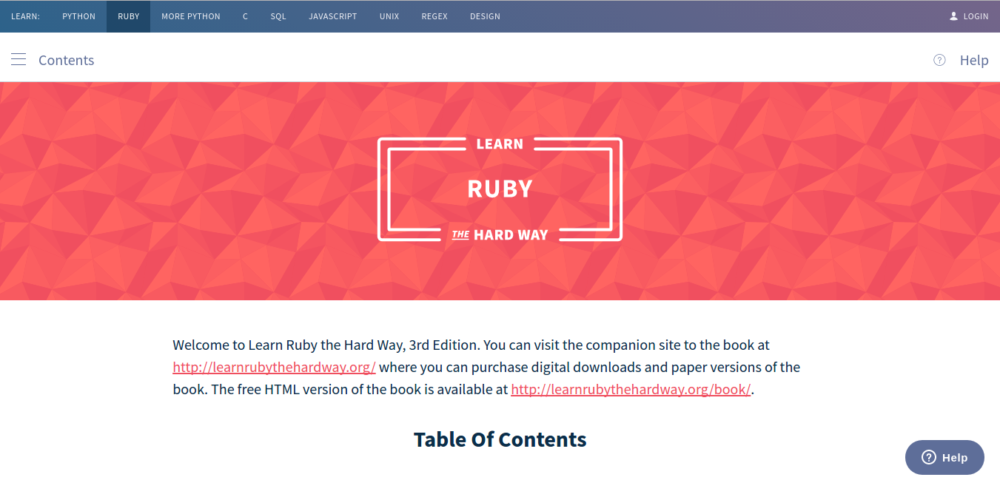

A presentation by
This is what the summer of code website looks like..
GSoC is about interacting with a community of like-minded people and contributing along with them to a common cause.
I started looking for Organisations related to Operating Systems.
A version control system is a repository of files, often the files for the source code of computer programs, with monitored access. Every change made to the source is tracked, along with who made the change, why they made it, and references to problems fixed, or enhancements introduced, by the change.
Git is one of the leading distributed Version Control Systems.
Github and bitbucket are some of the most popular git hosting platforms.As the organisation I chose uses github I signed up for it.
The Organisation I was build upon Ruby.Hence I started learning it.
First I tried the interactive course
And I referred more resources...
